Autocorrelation Function (ACF) and Partial Autocorrelation Function (PACF) plots are crucial tools in time series analysis, helping to identify the type of model that best describes a series. The ACF plot shows the correlation of the series with its own lags, providing insights into the overall correlation structure and potential seasonality. On the other hand, the PACF plot reveals the direct effect of past values on the current value, helping to pinpoint the order of autoregressive models.
By examining the ACF and PACF plots, we can discern patterns that suggest the presence of autoregressive (AR) or moving average (MA) components in our time series models. Significant spikes in the ACF plot indicate potential AR terms, while significant spikes in the PACF plot suggest MA terms. These plots also assist in determining the stationarity of the series, a crucial aspect in time series modeling, where non-stationary data often require differencing to achieve stationarity.
This section delves into the ACF and PACF plots for our datasets, examining their autocorrelation structures to get insights that will guide our model selection and inform our forecasting methodology.
#ACF Plot for Crude Oilcrude_oil_acf <-ggAcf(composite_crude_oil_ts) +ggtitle("ACF Plot for Refiner Acquisition Cost of Crude Oil") +theme_bw() +geom_segment(lineend ="butt", color ="#99494d") +geom_hline(yintercept =0, color ="#99494d") +theme(plot.title =element_text(hjust =0.5, face ="bold"))#PACF Plot for Crude Oilcrude_oil_pacf <-ggPacf(composite_crude_oil_ts) +ggtitle("PACF Plot for Refiner Acquisition Cost of Crude Oil") +theme_bw() +geom_segment(lineend ="butt", color ="#99494d") +geom_hline(yintercept =0, color ="#99494d")+theme(plot.title =element_text(hjust =0.5, face ="bold"))#Arrange the plotsgrid.arrange(crude_oil_acf, crude_oil_pacf, nrow =2)
The ACF plot for crude oil prices demonstrates prolonged significant autocorrelation, suggesting a non-stationary series. The gradual decline in correlation as lags increase indicates a potential long-term dependency or trend in the data.
The PACF plot shows significant spike at lag 1 and 2, followed by non-significant values
The ACF and PACF plots suggest considering an ARIMA model with ‘p’ to be 1 and 2. The slow decay in the ACF implies that differencing (d > 0) may be necessary to achieve stationarity.
ACF-PACF Plot
# ACF and PACF for Natural Gasnatural_gas_acf <-ggAcf(citygate_gas_ts) +ggtitle("ACF Plot for Natural Gas Price") +theme_bw() +geom_segment(lineend ="butt", color ="#99494d") +geom_hline(yintercept =0, color ="#99494d") +theme(plot.title =element_text(hjust =0.5, face ="bold"))natural_gas_pacf <-ggPacf(citygate_gas_ts) +ggtitle("PACF Plot for Natural Gas Price") +theme_bw() +geom_segment(lineend ="butt", color ="#99494d") +geom_hline(yintercept =0, color ="#99494d") +theme(plot.title =element_text(hjust =0.5, face ="bold"))grid.arrange(natural_gas_acf, natural_gas_pacf, nrow =2)
The ACF plot for natural gas prices shows a very slow decay, suggesting non-stationarity and a need for differencing.
The PACF plot shows a significant spike at lag 1, followed by a drop-off.
The ACF and PACF plots suggest considering an ARIMA model with ‘p’ to be 1 and 2. The slow decay in the ACF implies that differencing (d > 0) may be necessary to achieve stationarity.
ACF-PACF Plot
# ACF and PACF for Electricityelectricity_acf <-ggAcf(total_electricity_ts) +ggtitle("ACF Plot for Average Price of Electricity to Ultimate Customers") +theme_bw() +geom_segment(lineend ="butt", color ="#99494d") +geom_hline(yintercept =0, color ="#99494d")+theme(plot.title =element_text(hjust =0.5, face ="bold"))electricity_pacf <-ggPacf(total_electricity_ts) +ggtitle("PACF Plot for Average Price of Electricity to Ultimate Customers") +theme_bw() +geom_segment(lineend ="butt", color ="#99494d") +geom_hline(yintercept =0, color ="#99494d")+theme(plot.title =element_text(hjust =0.5, face ="bold"))grid.arrange(electricity_acf, electricity_pacf, nrow =2)
The ACF plot for electricity shows a strong positive autocorrelation across all the lags indicating a potential MA term and a need for differencing due to non-stationarity.
The PACF plot shows a significant correlations at lag 1. The choice of ‘p’ could be 1 or 2 based on the first significant spikes.
The consistent autocorrelation in the ACF plot suggests a potential need for a higher-order MA term or differencing, leading to an ARIMA(p,d,q) model consideration.
ACF-PACF Plot
# ACF and PACF for GDP (Log)gdp_acf <-ggAcf(gdp_log_ts) +ggtitle("ACF Plot for GDP") +theme_bw() +geom_segment(lineend ="butt", color ="#99494d") +geom_hline(yintercept =0, color ="#99494d")+theme(plot.title =element_text(hjust =0.5, face ="bold"))gdp_pacf <-ggPacf(gdp_log_ts) +ggtitle("PACF Plot for GDP") +theme_bw() +geom_segment(lineend ="butt", color ="#99494d") +geom_hline(yintercept =0, color ="#99494d")+theme(plot.title =element_text(hjust =0.5, face ="bold")) grid.arrange(gdp_acf, gdp_pacf, nrow =2)
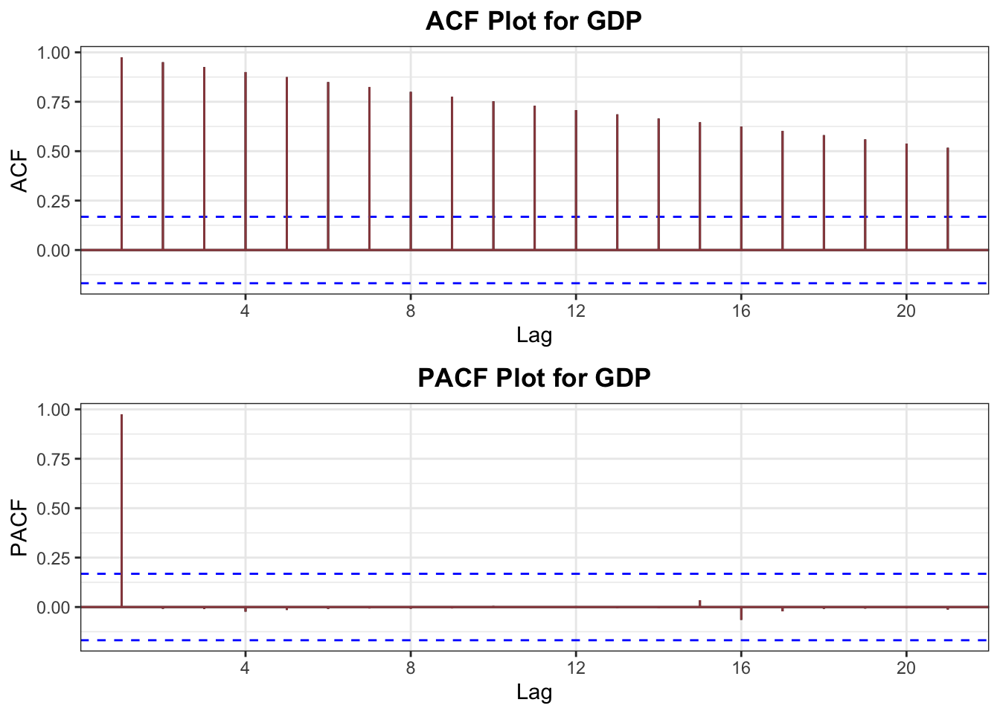
The ACF plot for GDP shows a persistent strong autocorrelation across all lags indicates non-stationarity, suggesting that differencing may be necessary.
The PACF plot have a sharp cutoff after lag 1 indicating an AR(1) process, suggesting that previous values have a significant impact on current GDP.
Given the strong autocorrelation and the PACF cutoff, an ARIMA(1,1,0) model may be a good starting point for modeling GDP, but differencing (d > 0) may be necessary.
ACF-PACF Plot
# ACF and PACF for CPI (Log)cpi_acf <-ggAcf(cpi_log_ts) +ggtitle("ACF Plot for CPI") +theme_bw() +geom_segment(lineend ="butt", color ="#99494d") +geom_hline(yintercept =0, color ="#99494d")+theme(plot.title =element_text(hjust =0.5, face ="bold"))cpi_pacf <-ggPacf(cpi_log_ts) +ggtitle("PACF Plot for CPI") +theme_bw() +geom_segment(lineend ="butt", color ="#99494d") +geom_hline(yintercept =0, color ="#99494d")+theme(plot.title =element_text(hjust =0.5, face ="bold")) grid.arrange(cpi_acf, cpi_pacf, nrow =2)
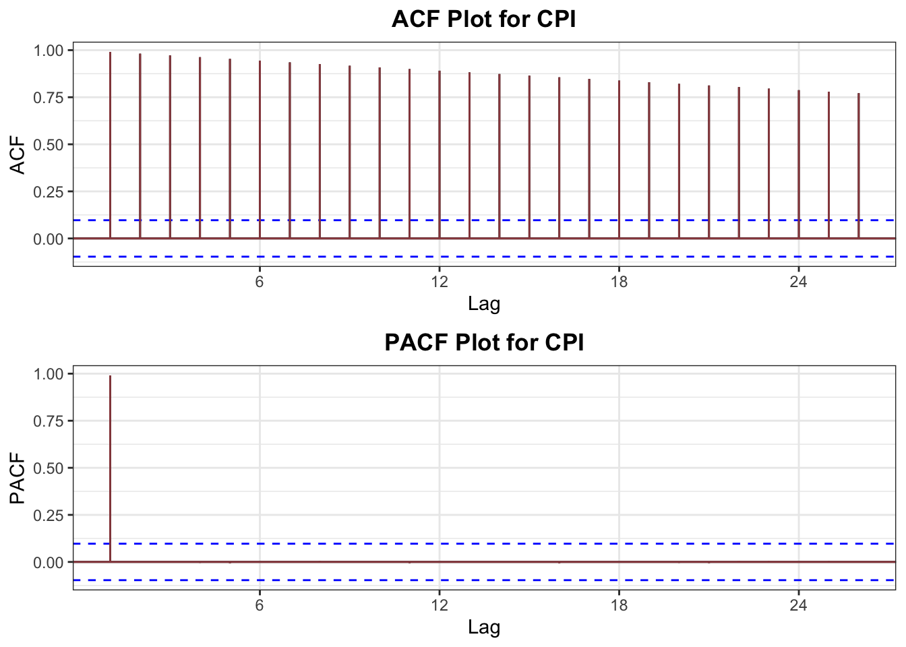
The ACF plot for CPI shows a sustained high autocorrelation across lags suggests a non-stationary time series, indicative of CPI’s long memory.
The PACF plot have a sharp spike and a cutoff after lag 1 indicating an AR(1) process, suggesting that previous values have a significant impact on current GDP.
The sustained autocorrelation in the ACF plot implies that differencing might be needed. An initial ARIMA(1,1,0) model could be considered.
Detrend VS First - Difference
Detrending and differencing are foundational techniques used to render time series data stationary. Detrending removes the underlying trend from the data, usually by subtracting an estimated trend component from the original series. Differencing, in contrast, focuses on the changes between consecutive observations by transforming the series into a sequence of differences. While detrending is aimed at addressing trends, differencing is capable of eliminating both trend and seasonal components, potentially achieving stationarity in the process.
Applying Detrending and Differencing to Our Datasets:
Now, let’s apply these critical techniques of detrending and differencing to our datasets, observing how they enhance the stationarity of the data:
Post-detrending residuals may exhibit patterns, suggesting that linear detrending doesn’t fully capture all dynamics within the series.
First Difference:
The series shows fluctuations that average out around zero, suggesting enhanced stationarity. Still, a deeper autocorrelation analysis is necessary to confirm full stationarity.
Even after detrending, the series displays volatility, implying that mere removal of a linear trend doesn’t encapsulate all the complexities in the data.
First Difference:
The series maintains a consistent mean, though volatility persists, with noticeable spikes potentially attributable to external shocks like the 2020 pandemic.
Periodic fluctuations in the detrended plot hint at seasonality within the electricity price data.
First Difference:
The first differenced series oscillates around a central mean, which is indicative of stationarity in the mean of the series. However, the consistent pattern of spikes indicates a strong seasonal component.
The detrended GDP plot showcases that the residuals seem to have a non-linear component, as evidenced by the gradual decline and subsequent increase over time. The residuals decrease and then slowly begin to rise after the 1980s, accelerating significantly in recent years. GDP growth rate is not constant and a simple linear model may not be sufficient to capture the complexities.
First Difference:
The differenced series predominantly hovers around the zero line, which indicates that this transformation effectively removes the trend from the data, leading to a stationary series in terms of the mean. The substantial spike observed towards the end is likely due to the recent economic downturn due to the COVID-19 pandemic.
A decline followed by stabilization and increase in the residuals indicates that inflationary trends are not linear over Year.
First Difference:
The first difference plot for CPI demonstrates a series that fluctuates around a central mean value.
Original Vs First Difference
This section focuses on a direct comparison between our original time series data and their first differenced forms. By examining the differences, we can highlight the effectiveness of the differencing technique in achieving stationarity—a key prerequisite for many time series modeling approaches.
#Plot for the originalplot1 <-ggplot(composite_crude_oil_prices, aes(x = Date, y = Value)) +geom_line(colour ="#207068") +theme_bw() +xlab("Year") +ylab("Crude Oil Prices (USD)") +ggtitle("Original Crude Oil Prices Data")+theme(plot.title =element_text(hjust =0.5, face ="bold"))#Calculate the first differencescomposite_crude_oil_prices$Diff_Value <-c(NA, diff(composite_crude_oil_prices$Value))#Plot for the first-differencedplot2 <-ggplot(composite_crude_oil_prices, aes(x = Date, y = Diff_Value)) +geom_line(colour ="#702028") +theme_bw() +xlab("Year") +ylab("First Differences") +ggtitle("First Differenced Crude Oil Data")+theme(plot.title =element_text(hjust =0.5, face ="bold"))#Arrangegrid.arrange(plot1, plot2, nrow =2)
Warning: Removed 1 row containing missing values or values outside the scale range
(`geom_line()`).
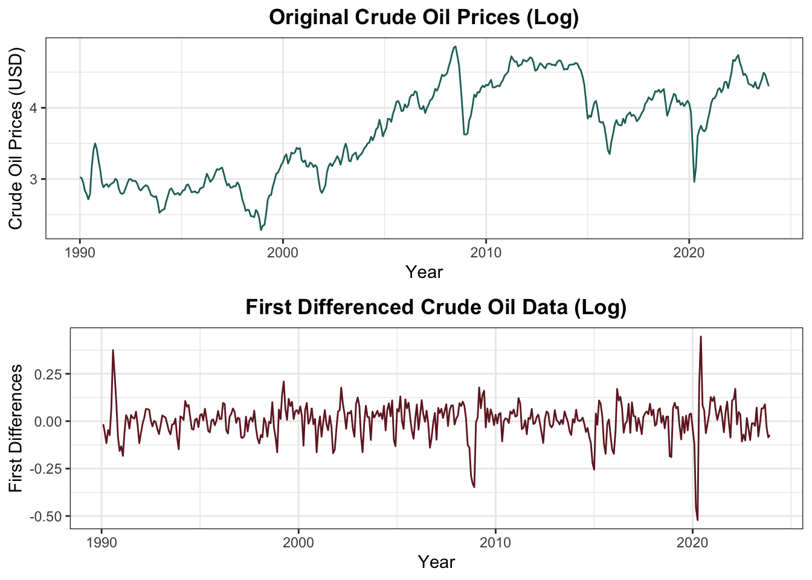
Plot
#Plot for the originalplot1_ng <-ggplot(citygate_gas_prices, aes(x = Date, y = Value)) +geom_line(colour ="#207068") +theme_bw() +xlab("Year") +ylab("Natural Gas Prices") +ggtitle("Original Natural Gas Data")+theme(plot.title =element_text(hjust =0.5, face ="bold"))#Calculate the first differencescitygate_gas_prices$Diff_Value <-c(NA, diff(citygate_gas_prices$Value))#Plot for the first-differencedplot2_ng <-ggplot(citygate_gas_prices, aes(x = Date, y = Diff_Value)) +geom_line(colour ="#702028") +theme_bw() +xlab("Year") +ylab("First Differences") +ggtitle("First Differenced Natural Gas Data")+theme(plot.title =element_text(hjust =0.5, face ="bold"))# Arrangegrid.arrange(plot1_ng, plot2_ng, nrow =2)
Warning: Removed 1 row containing missing values or values outside the scale range
(`geom_line()`).
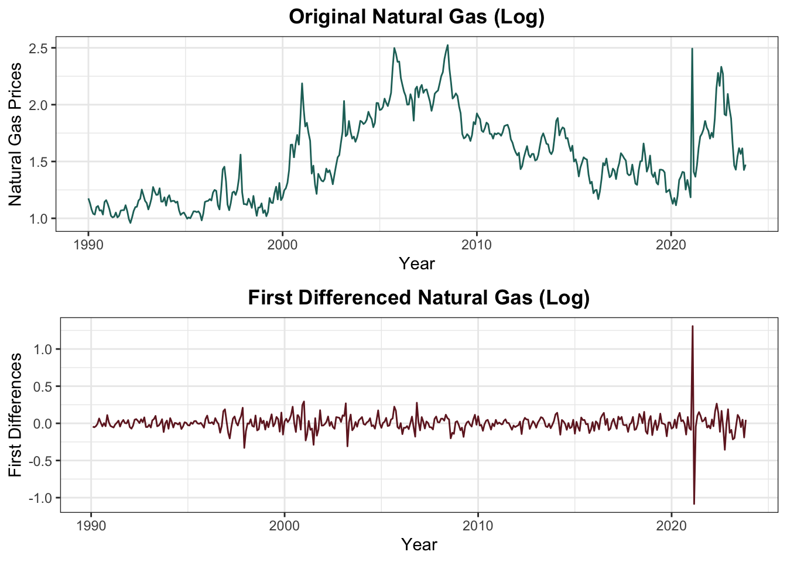
Plot
#Plot for the originalplot1_elec <-ggplot(total_electricity_prices, aes(x = Date, y = Value)) +geom_line(colour ="#207068") +theme_bw() +xlab("Year") +ylab("Electricity Prices") +ggtitle("Original Electricity Data")+theme(plot.title =element_text(hjust =0.5, face ="bold"))#Calculate the first differencestotal_electricity_prices$Diff_Value <-c(NA, diff(total_electricity_prices$Value))#Plot for the first-differencedplot2_elec <-ggplot(total_electricity_prices, aes(x = Date, y = Diff_Value)) +geom_line(colour ="#702028") +theme_bw() +xlab("Year") +ylab("First Differences") +ggtitle("First Differenced Electricity Data")+theme(plot.title =element_text(hjust =0.5, face ="bold"))#Arrangegrid.arrange(plot1_elec, plot2_elec, nrow =2)
Warning: Removed 1 row containing missing values or values outside the scale range
(`geom_line()`).
Plot
#Plot for the originalplot1_gdp <-ggplot(gdp_data, aes(x = DATE, y = LOG_GDP)) +geom_line(colour ="#207068") +theme_bw() +xlab("Year") +ylab("Log of GDP") +ggtitle("Original GDP Data (Log)")+theme(plot.title =element_text(hjust =0.5, face ="bold"))#Calculate the first differencesgdp_data$Diff_GDP <-c(NA, diff(gdp_data$LOG_GDP))#Plot for the first-differencedplot2_gdp <-ggplot(gdp_data, aes(x = DATE, y = Diff_GDP)) +geom_line(colour ="#702028") +theme_bw() +xlab("Year") +ylab("First Differences") +ggtitle("First Differenced GDP (Log)")+theme(plot.title =element_text(hjust =0.5, face ="bold"))#Arrangegrid.arrange(plot1_gdp, plot2_gdp, nrow =2)
Warning: Removed 1 row containing missing values or values outside the scale range
(`geom_line()`).
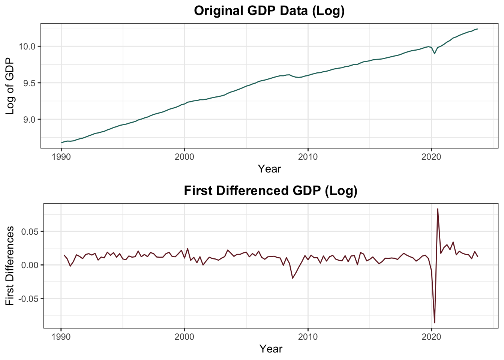
Plot
#Plot for the originalplot1_cpi <-ggplot(cpi_data, aes(x = DATE, y = LOG_CPI)) +geom_line(colour ="#207068") +theme_bw() +xlab("Year") +ylab("CPI") +ggtitle("Original CPI Data (Log)")+theme(plot.title =element_text(hjust =0.5, face ="bold"))#Calculate the first differencescpi_data$Diff_CPI <-c(NA, diff(cpi_data$LOG_CPI))#Plot for the first-differencedplot2_cpi <-ggplot(cpi_data, aes(x = DATE, y = Diff_CPI)) +geom_line(colour ="#702028") +theme_bw() +xlab("Year") +ylab("First Differences") +ggtitle("First Differenced CPI Data (Log)")+theme(plot.title =element_text(hjust =0.5, face ="bold"))#Arrangegrid.arrange(plot1_cpi, plot2_cpi, nrow =2)
Warning: Removed 1 row containing missing values or values outside the scale range
(`geom_line()`).
Adjusted Dickey-Fuller Test
After applying various transformations to address the non-stationarity in our time series data, our next step is to conduct the Adjusted Dickey-Fuller Test on the differenced data. This test is crucial for confirming that the adjustments we’ve made have effectively rendered the series stationary. Stationarity is a key assumption for many time series forecasting methods, as it implies that the statistical properties of the series are consistent over time. By applying the Adjusted Dickey-Fuller Test to our transformed data, we aim to validate that the mean, variance, and autocorrelation structure of the series do not change over time.
#First differencediff_crude_oil_ts <-diff(composite_crude_oil_ts, differences =1)#Applying ADF test to the differenced time seriesadf_test_diff_crude_oil <-adf.test(diff_crude_oil_ts, alternative ="stationary")
Warning in adf.test(diff_crude_oil_ts, alternative = "stationary"): p-value
smaller than printed p-value
ADF Test
#Display the test resultsprint(adf_test_diff_crude_oil)
Augmented Dickey-Fuller Test
data: diff_crude_oil_ts
Dickey-Fuller = -9.3996, Lag order = 8, p-value = 0.01
alternative hypothesis: stationary
In the adjusted test we can clearly see the p-value is significantly less than 0.05, we reject the null hypothesis and conclude that the differenced series is stationary. The fact that the differenced series is stationary (but the original was not) suggests that the crude oil prices exhibit a trend or a form of non-stationarity that can be removed by differencing.
ADF Test
#First differencediff_citygate_gas_ts <-diff(citygate_gas_ts, differences =1)diff_citygate_gas_ts <-na.omit(diff_citygate_gas_ts)#Applying ADF test to the differenced time seriesadf_test_diff_natural_gas <-adf.test(diff_citygate_gas_ts, alternative ="stationary")
Warning in adf.test(diff_citygate_gas_ts, alternative = "stationary"): p-value
smaller than printed p-value
ADF Test
#Display the test resultsprint(adf_test_diff_natural_gas)
Augmented Dickey-Fuller Test
data: diff_citygate_gas_ts
Dickey-Fuller = -8.689, Lag order = 7, p-value = 0.01
alternative hypothesis: stationary
In the adjusted test we can clearly see the p-value is significantly less than 0.05, leading us to reject the null hypothesis, concluding that the differenced natural gas price series is stationary. This indicates that the series, once differenced, does not have a unit root, and its mean and variance are constant over time.
ADF Test
#First differencediff_total_electricity_ts <-diff(total_electricity_ts, differences =1)diff_total_electricity_ts <-na.omit(diff_total_electricity_ts)#Applying ADF test to the differenced time seriesadf_test_diff_electricity <-adf.test(diff_total_electricity_ts, alternative ="stationary")
Warning in adf.test(diff_total_electricity_ts, alternative = "stationary"):
p-value smaller than printed p-value
ADF Test
#Display the test resultsprint(adf_test_diff_electricity)
Augmented Dickey-Fuller Test
data: diff_total_electricity_ts
Dickey-Fuller = -19.045, Lag order = 7, p-value = 0.01
alternative hypothesis: stationary
With the p-value now below 0.05, we can reject the null hypothesis, concluding that the differenced electricity price series is stationary. This means that after differencing, the series doesn’t exhibit a unit root, and its properties like mean and variance are consistent over time.
ADF Test
#First differencediff_gdp_ts <-diff(gdp_log_ts, differences =1)diff_gdp_ts <-na.omit(diff_gdp_ts)#Applying ADF test to the differenced time seriesadf_test_diff_gdp <-adf.test(diff_gdp_ts, alternative ="stationary")
Warning in adf.test(diff_gdp_ts, alternative = "stationary"): p-value smaller
than printed p-value
ADF Test
# Display the test resultsprint(adf_test_diff_gdp)
Augmented Dickey-Fuller Test
data: diff_gdp_ts
Dickey-Fuller = -5.9231, Lag order = 6, p-value = 0.01
alternative hypothesis: stationary
The p-value below 0.05 allows us to reject the null hypothesis, concluding that the differenced GDP series is stationary. This suggests that the original GDP series had a trend or other non-stationary components that were effectively removed by differencing.
ADF Test
#First differencediff_cpi_ts <-diff(cpi_log_ts, differences =1)diff_cpi_ts <-na.omit(diff_cpi_ts)#Applying ADF test to the differenced time seriesadf_test_diff_cpi <-adf.test(diff_cpi_ts, alternative ="stationary")
Warning in adf.test(diff_cpi_ts, alternative = "stationary"): p-value smaller
than printed p-value
ADF Test
# Display the test resultsprint(adf_test_diff_cpi)
Augmented Dickey-Fuller Test
data: diff_cpi_ts
Dickey-Fuller = -4.3243, Lag order = 9, p-value = 0.01
alternative hypothesis: stationary
Since the p-value is now below 0.05, we can reject the null hypothesis, concluding that the differenced CPI series is stationary.
After implementing the Adjusted Dickey-Fuller Test on our differenced data sets, we observed a significant reduction in the p-values for all the data sets. This result strongly suggests that the differencing process has effectively induced stationarity in these series, as indicated by the absence of a unit root. However, to ensure the robustness of our findings and to precisely model and forecast these series, a subsequent examination of the ACF and PACF plots for the differenced data is imperative. These plots will provide further insights into the autocorrelation structure of the data, guiding us in the selection of appropriate ARIMA model parameters.
First vs Second Differencing
In time series analysis, differencing is a technique used to stabilize the mean of a series and make it stationary. When trends and seasonality are present in a time series, they can affect the predictive models. Differencing helps to mitigate these influences by focusing on the changes in the data rather than the actual values.
Differencing operates under the principle of transformation. It is designed to remove specific types of patterns:
First Differencing: This method subtracts the current observation from the previous one. It is a powerful tool to eliminate trends and some types of seasonality in the data, providing a clearer view of the underlying cyclical components and irregularities.
Second Differencing: When first differencing is not enough to achieve stationarity, or when the time series exhibits a more complex pattern such as a trend within a trend, second differencing can be employed. This involves applying the differencing operation twice, which can further simplify the predictive structure by reducing more complex serial correlations.
# First Differencingfirst_diff_crude_oil <-diff(composite_crude_oil_ts)ggtsdisplay(first_diff_crude_oil, main ="First Differencing of Crude Oil Prices")
Plot
# Second Differencingsecond_diff_crude_oil <-diff(first_diff_crude_oil)ggtsdisplay(second_diff_crude_oil, main ="Second Differencing of Crude Oil Prices")
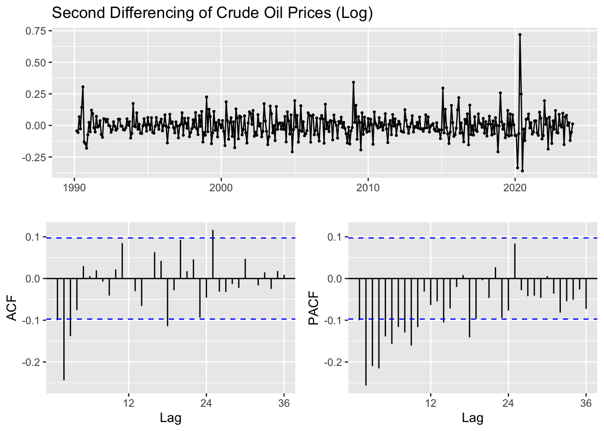
Based on these graphs, second differencing does not seem necessary. The first differencing appears to have sufficiently stabilized the mean of the time series, as there is no visible trend or seasonality, and the autocorrelation in the data seems to be addressed.
Examining the ACF and PACF plots for the first differencing of crude oil prices, we can suggest a range of values for p and q:
p = 0 (since after the first lag, PACF cuts off which suggests no autoregressive terms) p = 1, 2, (to account for the spike at lag 1 and 2)
q = 0 q = 1, 2, 3 (as the first three lags are above the significance level) q = 4, 5
Plot
# First Differencingfirst_diff_natural_gas <-diff(citygate_gas_ts)ggtsdisplay(first_diff_natural_gas, main ="First Differencing of Natural Gas Prices")
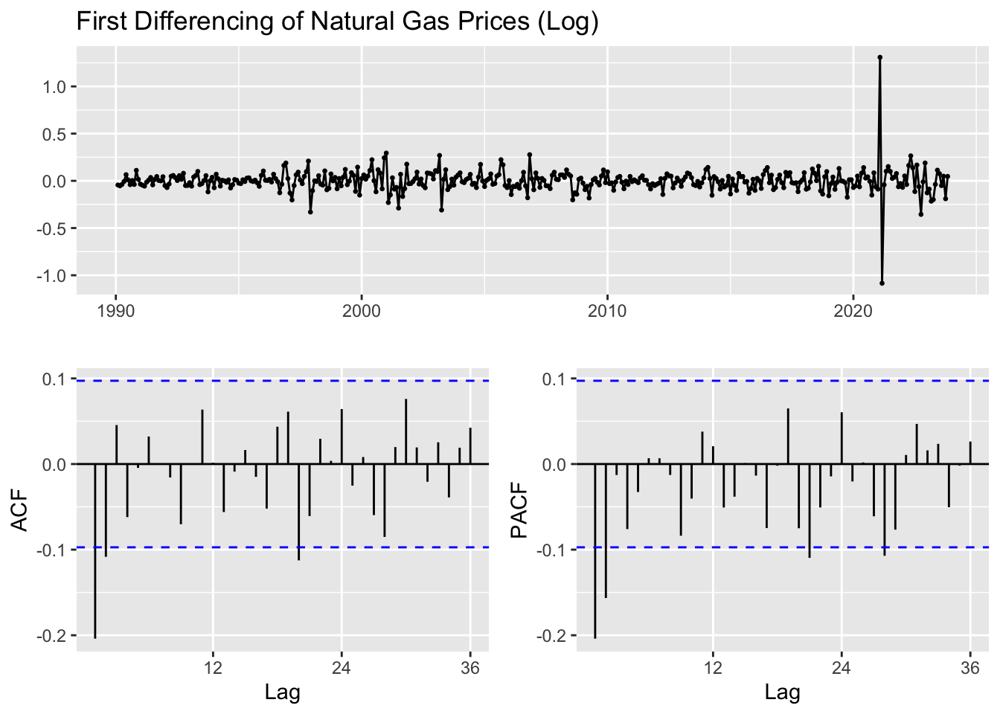
Plot
# Second Differencingsecond_diff_natural_gas <-diff(first_diff_natural_gas)ggtsdisplay(second_diff_natural_gas, main ="Second Differencing of Natural Gas Prices")
We can clearly observe second differencing doesn’t appear to provide additional benefits. In fact, doing so may result in a loss of information and potentially over-differencing the data. The first difference might be sufficient for the natural gas prices time series, as the plots don’t indicate non-stationarity.
Examining the ACF and PACF plots for the first differencing of natural gas prices, we can suggest a range of values for p and q:
p = 0,1,2 q = 1 (considering the first significant lag) q = 2,3 (gradual decay and a second significant lag)
Plot
# First Differencingfirst_diff_electricity <-diff(total_electricity_ts)ggtsdisplay(first_diff_electricity, main ="First Differencing of Electricity Prices")
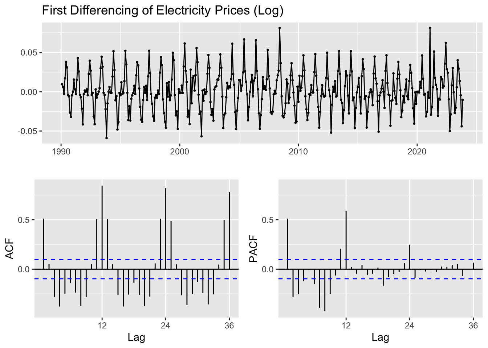
Plot
# Second Differencingsecond_diff_electricity <-diff(first_diff_electricity)ggtsdisplay(second_diff_electricity, main ="Second Differencing of Electricity Prices")
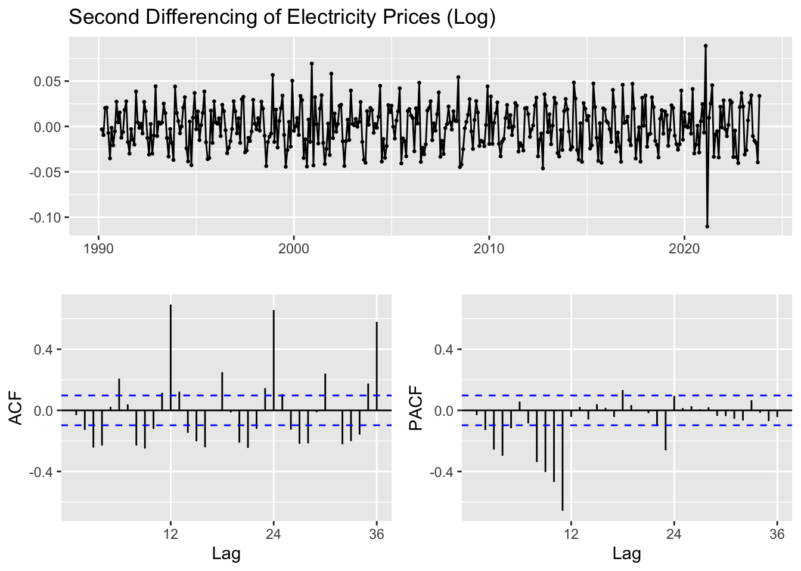
It seems that first differencing might have been adequate to stabilize the mean of the series and to reduce the autocorrelation, the second differencing does not appear to provide additional necessary correction, as evidenced by the ACF and PACF plots which do not show significant autocorrelation after the first differencing.
Examining the ACF and PACF plots for the first differencing of electricity prices, we can suggest a range of values for p and q:
p = 0, 1, 2 (considering the significant spike at the first lag) q = 1, 2, 3, 4
Plot
# First Differencingfirst_diff_gdp <-diff(gdp_log_ts)ggtsdisplay(first_diff_gdp, main ="First Differencing of GDP")
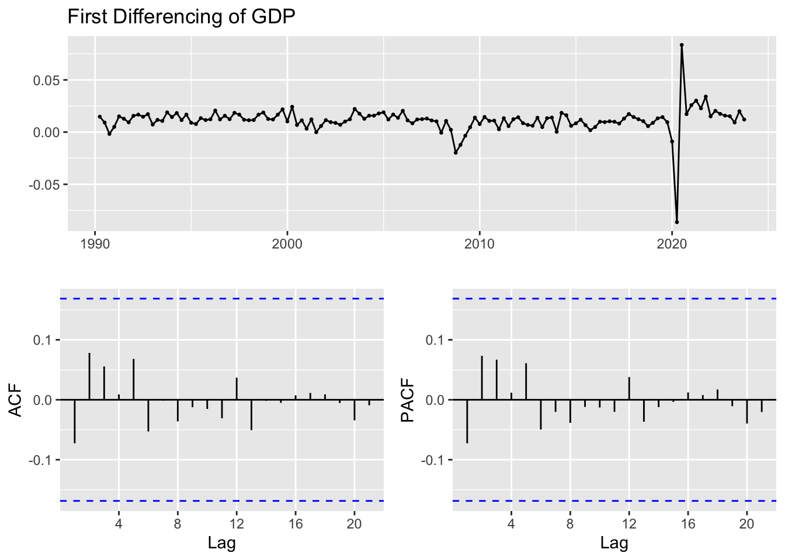
Plot
# Second Differencingsecond_diff_gdp <-diff(first_diff_gdp)ggtsdisplay(second_diff_gdp, main ="Second Differencing of GDP")
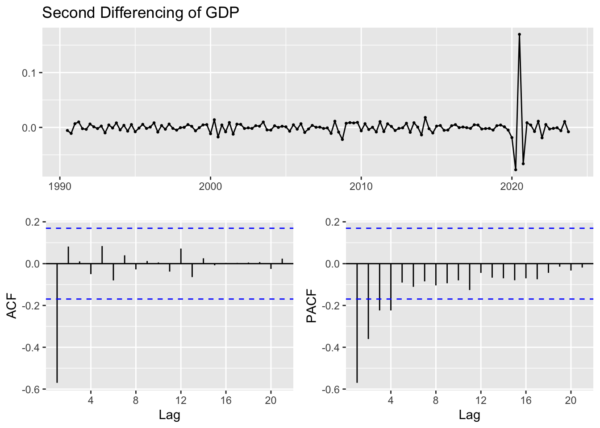
The first differencing of GDP may be sufficient for stationarity, as the time series graph shows no trend and the ACF plot exhibits no significant autocorrelations. The second differencing results indicates over-differencing, as suggested by the significant negative correlations in the ACF and PACF plots at the initial lags.
Examining the ACF and PACF plots for the first differencing of GDP, we can suggest a range of values for p and q:
p = 1, 2,
q = 1, 2, 3 (considering the first few significant lags)
Plot
# First Differencingfirst_diff_cpi <-diff(cpi_log_ts)ggtsdisplay(first_diff_cpi, main ="First Differencing of CPI")
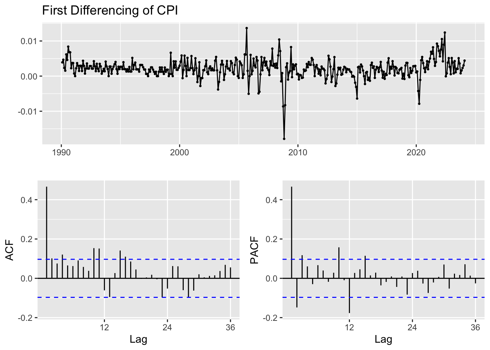
Plot
# Second Differencingsecond_diff_cpi <-diff(first_diff_cpi)ggtsdisplay(second_diff_cpi, main ="Second Differencing of CPI")
The second differencing of CPI doesn’t show a noticeable trend, the first differencing might be sufficient. The second differencing does not seem to add further information; it rather makes the ACF and PACF plots more of a white noise process, which could suggest over-differencing.
Examining the ACF and PACF plots for the first differencing of CPI, we can suggest a range of values for p and q:
p = 1, 2, 3, 4, 5, 6 (significant spike at lag 1) q = 1, 2, 3, 4, 5, 6, 7, 8, 9 (to capture the initial significant lags)
In our analysis, we applied first and second differencing techniques to examine their effects on stationarity. First differencing is often sufficient to stabilize the mean of a series and make it stationary. Second differencing, although sometimes necessary for complex trends, wasn’t found to provide substantial benefits in our datasets. Instead, it seems to indicate a potential over-differencing, which can obscure meaningful insights from the data.
For our datasets, first differencing effectively addressed visible trends and autocorrelations, the second differencing didn’t reveal additional insights and, in some cases, suggested that the data might be overly differenced, indicated by increased noise in the ACF and PACF plots. Therefore, in our case, sticking with first differencing seems to be the prudent approach to preparing our time series data for further analysis and modeling.
AIC & BIC
In time series analysis, choosing the right model is paramount for accurate forecasting. Two of the most critical metrics for model selection are the Akaike Information Criterion (AIC) and the Bayesian Information Criterion (BIC). Both criteria are grounded in information theory and provide a means to balance model fit with model complexity.
AIC is a tool for model selection that quantifies the trade-offs between model complexity (the number of parameters in the model) and the goodness of fit. AIC rewards models that achieve a high goodness of fit but penalizes those that become overly complex. A lower AIC value often indicates a preferable model.
BIC extends the logic of AIC by incorporating sample size into the penalty for complexity. This adjustment makes BIC more stringent with complex models when dealing with larger datasets. As with AIC, a lower BIC suggests a better model.
d <-1# Degree of differencingtemp <-data.frame()ls <-matrix(rep(NA, 6*18), nrow =18) # 18 combinationsi <-1for (p in0:2) {for (q in0:5) {if(p-1+d+q-1<=8) { model <-Arima(composite_crude_oil_ts, order =c(p, d, q), include.drift =TRUE) ls[i,] <-c(p, d, q, model$aic, model$bic, model$aicc) i <- i +1 } }}temp=as.data.frame(ls)names(temp)=c("p","d","q","AIC","BIC","AICc")knitr::kable(temp)
p
d
q
AIC
BIC
AICc
0
1
0
3283.262
3292.053
3283.282
0
1
1
3128.995
3142.181
3129.036
0
1
2
3101.221
3118.802
3101.288
0
1
3
3102.883
3124.859
3102.984
0
1
4
3102.419
3128.790
3102.561
0
1
5
3103.764
3134.531
3103.953
1
1
0
3110.728
3123.914
3110.768
1
1
1
3106.339
3123.920
3106.407
1
1
2
3102.999
3124.976
3103.100
1
1
3
3098.002
3124.373
3098.144
1
1
4
3096.531
3127.298
3096.721
1
1
5
3098.350
3133.513
3098.595
2
1
0
3103.853
3121.434
3103.920
2
1
1
3095.071
3117.047
3095.172
2
1
2
3104.067
3130.438
3104.209
2
1
3
3096.578
3127.345
3096.768
2
1
4
3091.399
3126.561
3091.643
2
1
5
3093.397
3132.955
3093.703
AIC-BIC
#Displaying the models with min valuestemp[which.min(temp$AIC),]
p d q AIC BIC AICc
17 2 1 4 3091.399 3126.561 3091.643
AIC-BIC
temp[which.min(temp$BIC),]
p d q AIC BIC AICc
14 2 1 1 3095.071 3117.047 3095.172
AIC-BIC
temp[which.min(temp$AICc),]
p d q AIC BIC AICc
17 2 1 4 3091.399 3126.561 3091.643
When selecting the best ARIMA model for forecasting crude oil prices, it’s common for the AIC and BIC to suggest different models. In such cases, we often prefer the model with the lower AIC. Based on the results, we’ve can select two models for further consideration:
Best Model by AIC (and AICc): ARIMA(2,1,4)
Best Model by BIC: ARIMA(2,1,1)
AIC-BIC
d <-1# Degree of differencingtemp <-data.frame()ls <-matrix(rep(NA, 6*9), nrow =9) # 9 combinations: p (3 options) * q (3 options)i <-1for (p in0:2) {for (q in1:3) {if(p-1+d+q-1<=8) { model <-Arima(citygate_gas_ts, order =c(p, d, q), include.drift =TRUE) ls[i,] <-c(p, d, q, model$aic, model$bic, model$aicc) i <- i +1 } }}temp=as.data.frame(ls)names(temp)=c("p","d","q","AIC","BIC","AICc")#Displaying the tableknitr::kable(temp)
p
d
q
AIC
BIC
AICc
0
1
1
1037.540
1050.068
1037.591
0
1
2
1035.670
1052.373
1035.754
0
1
3
1037.632
1058.512
1037.759
1
1
1
1035.597
1052.300
1035.681
1
1
2
1037.457
1058.337
1037.584
1
1
3
1039.391
1064.446
1039.568
2
1
1
1033.638
1054.517
1033.764
2
1
2
1039.234
1064.289
1039.411
2
1
3
1035.933
1065.164
1036.170
AIC-BIC
#Displaying the models with min valuestemp[which.min(temp$AIC),]
p d q AIC BIC AICc
7 2 1 1 1033.638 1054.517 1033.764
AIC-BIC
temp[which.min(temp$BIC),]
p d q AIC BIC AICc
1 0 1 1 1037.54 1050.068 1037.591
AIC-BIC
temp[which.min(temp$AICc),]
p d q AIC BIC AICc
7 2 1 1 1033.638 1054.517 1033.764
When selecting the best ARIMA model for forecasting natural gas prices, it’s common for the AIC and BIC to suggest different models. In such cases, we often prefer the model with the lower AIC. Based on the results, we’ve can select two models for further consideration:
Best Model by AIC (and AICc): ARIMA(2,1,1)
Best Model by BIC: ARIMA(0,1,1)
AIC-BIC
d <-1# Degree of differencingtemp <-data.frame()ls <-matrix(rep(NA, 6*12), nrow =12) # p (3 options) * q (4 options) = 12 combinationsi <-1for (p in0:2) {for (q in1:4) {if(p-1+d+q-1<=8) { model <-Arima(total_electricity_ts, order =c(p, d, q), include.drift =TRUE) ls[i,] <-c(p, d, q, model$aic, model$bic, model$aicc) i <- i +1 } }}temp=as.data.frame(ls)names(temp)=c("p","d","q","AIC","BIC","AICc")#Displaying the tableknitr::kable(temp)
p
d
q
AIC
BIC
AICc
0
1
1
-288.0891
-275.4694
-288.0404
0
1
2
-308.6696
-291.8433
-308.5881
0
1
3
-307.0421
-286.0092
-306.9196
0
1
4
-357.3298
-332.0903
-357.1580
1
1
1
-299.4749
-282.6486
-299.3934
1
1
2
-306.7249
-285.6920
-306.6024
1
1
3
-350.6795
-325.4400
-350.5077
1
1
4
-377.7661
-348.3201
-377.5366
2
1
1
-386.4309
-365.3980
-386.3084
2
1
2
-413.0610
-387.8215
-412.8892
2
1
3
-384.4067
-354.9607
-384.1772
2
1
4
-391.7067
-358.0541
-391.4110
AIC-BIC
#Displaying the models with min valuestemp[which.min(temp$AIC),]
p d q AIC BIC AICc
10 2 1 2 -413.061 -387.8215 -412.8892
AIC-BIC
temp[which.min(temp$BIC),]
p d q AIC BIC AICc
10 2 1 2 -413.061 -387.8215 -412.8892
AIC-BIC
temp[which.min(temp$AICc),]
p d q AIC BIC AICc
10 2 1 2 -413.061 -387.8215 -412.8892
When selecting the best ARIMA model for forecasting electricity prices, it’s common for the AIC and BIC to suggest different models. In such cases, we often prefer the model with the lower AIC. Based on the results, we’ve can select two models for further consideration:
Best Model by AIC, BIC, and AICc (ARIMA(2,1,2))
ARIMA(2,1,4)
AIC-BIC
d <-1# Degree of differencingtemp <-data.frame()ls <-matrix(rep(NA, 6*6), nrow =6) # p (2 options) * q (3 options) = 6 combinationsi <-1for (p in1:2) {for (q in1:3) {if(p-1+d+q-1<=8) { model <-Arima(gdp_log_ts, order =c(p, d, q), include.drift =TRUE) ls[i,] <-c(p, d, q, model$aic, model$bic, model$aicc) i <- i +1 } }}temp=as.data.frame(ls)names(temp)=c("p","d","q","AIC","BIC","AICc")#Displaying the tableknitr::kable(temp)
p
d
q
AIC
BIC
AICc
1
1
1
-1825.102
-1810.194
-1824.969
1
1
2
-1827.912
-1809.278
-1827.713
1
1
3
-1826.069
-1803.708
-1825.789
2
1
1
-1827.146
-1808.512
-1826.947
2
1
2
-1827.312
-1804.951
-1827.032
2
1
3
-1826.056
-1799.968
-1825.681
AIC-BIC
#Displaying the models with min valuestemp[which.min(temp$AIC),]
p d q AIC BIC AICc
2 1 1 2 -1827.912 -1809.278 -1827.713
AIC-BIC
temp[which.min(temp$BIC),]
p d q AIC BIC AICc
1 1 1 1 -1825.102 -1810.194 -1824.969
AIC-BIC
temp[which.min(temp$AICc),]
p d q AIC BIC AICc
2 1 1 2 -1827.912 -1809.278 -1827.713
When selecting the best ARIMA model for forecasting GDP, it’s common for the AIC and BIC to suggest different models. In such cases, we often prefer the model with the lower AIC. Based on the results, we’ve can select two models for further consideration:
Best Model by AIC: ARIMA(1,1,2)
Best Model by BIC: ARIMA(1,1,1)
AIC-BIC
d <-1# Degree of differencingtemp <-data.frame()ls <-matrix(rep(NA, 6*33), nrow =33) i <-1for (p in1:6) {for (q in1:9) {if (p-1+d+q-1<=8) { model <-Arima(cpi_log_ts, order =c(p, d, q), include.drift =TRUE) ls[i,] <-c(p, d, q, model$aic, model$bic, model$aicc) i <- i +1 } }}temp=as.data.frame(ls)names(temp)=c("p","d","q","AIC","BIC","AICc")#Displaying the tableknitr::kable(temp)
p
d
q
AIC
BIC
AICc
1
1
1
-8274.810
-8255.491
-8274.767
1
1
2
-8316.987
-8292.838
-8316.922
1
1
3
-8315.052
-8286.073
-8314.960
1
1
4
-8313.094
-8279.285
-8312.972
1
1
5
-8311.906
-8273.268
-8311.749
1
1
6
-8311.395
-8267.927
-8311.199
1
1
7
-8312.474
-8264.176
-8312.234
1
1
8
-8310.664
-8257.537
-8310.375
2
1
1
-8313.139
-8288.990
-8313.074
2
1
2
-8315.049
-8286.070
-8314.957
2
1
3
-8315.054
-8281.246
-8314.932
2
1
4
-8313.692
-8275.053
-8313.534
2
1
5
-8312.448
-8268.980
-8312.252
2
1
6
-8310.458
-8262.160
-8310.218
2
1
7
-8312.154
-8259.026
-8311.864
3
1
1
-8315.224
-8286.245
-8315.133
3
1
2
-8313.227
-8279.418
-8313.105
3
1
3
-8313.445
-8274.807
-8313.288
3
1
4
-8318.218
-8274.750
-8318.021
3
1
5
-8316.217
-8267.919
-8315.976
3
1
6
-8314.694
-8261.566
-8314.405
4
1
1
-8313.263
-8279.455
-8313.141
4
1
2
-8313.901
-8275.263
-8313.744
4
1
3
-8316.779
-8273.311
-8316.582
4
1
4
-8316.219
-8267.921
-8315.978
4
1
5
-8315.235
-8262.107
-8314.946
5
1
1
-8312.599
-8273.960
-8312.442
5
1
2
-8315.663
-8272.195
-8315.467
5
1
3
-8316.009
-8267.711
-8315.768
5
1
4
-8317.982
-8264.854
-8317.693
6
1
1
-8312.058
-8268.590
-8311.861
6
1
2
-8310.840
-8262.543
-8310.600
6
1
3
-8311.576
-8258.448
-8311.286
AIC-BIC
#Displaying the models with min valuestemp[which.min(temp$AIC),]
p d q AIC BIC AICc
19 3 1 4 -8318.218 -8274.75 -8318.021
AIC-BIC
temp[which.min(temp$BIC),]
p d q AIC BIC AICc
2 1 1 2 -8316.987 -8292.838 -8316.922
AIC-BIC
temp[which.min(temp$AICc),]
p d q AIC BIC AICc
19 3 1 4 -8318.218 -8274.75 -8318.021
When selecting the best ARIMA model for forecasting CPI, it’s common for the AIC and BIC to suggest different models. In such cases, we often prefer the model with the lower AIC. Based on the results, we’ve can select two models for further consideration:
Best Model by AIC: ARIMA(3,1,4)
Best Model by BIC: ARIMA(1,1,2)
In our analysis, we used AIC and BIC to pick the best models for forecasting our data. Even though AIC and BIC sometimes suggest different models, we often chose the one with the lower AIC because it usually gives us a good balance and does a good job predicting future trends. This careful selection helps ensure our forecasts are as accurate as possible, providing valuable insights for each dataset.
Fitting ARIMA
After identifying the best models for our time series data using criteria like AIC and BIC, our next step is to fit these models to the data. Fitting the best ARIMA model allows us to refine our forecasts by honing in on the underlying patterns. While our primary focus is on the top-performing model, we also consider the second-best model. This approach gives us a fallback and an opportunity to compare, ensuring that our conclusions are robust and our forecasts are as reliable as possible.
For a general ARIMA(p, d, q) model, the equation can be represented as:
( x_t ) represents the time series after differencing,
The coefficients for the autoregressive (AR) part are denoted as phi_i, where ‘phi’ represents the coefficients and ‘i’ is an index that ranges from 1 to p
The coefficients for the moving average (MA) part are denoted as theta_j, where ‘theta’ represents the coefficients and ‘j’ is an index that ranges from 1 to q
Series: diff(composite_crude_oil_ts)
ARIMA(2,1,4) with drift
Coefficients:
ar1 ar2 ma1 ma2 ma3 ma4 drift
-0.7645 -0.3345 0.3231 -0.3344 -0.6574 -0.3313 0.0000
s.e. 0.2055 0.1564 0.2002 0.1316 0.1249 0.0782 0.0013
sigma^2 = 10.28: log likelihood = -1544.47
AIC=3104.93 AICc=3105.17 BIC=3140.08
Training set error measures:
ME RMSE MAE MPE MAPE MASE ACF1
Training set -0.008203546 3.184115 1.958849 NaN Inf 0.6398439 0.004101244
Coefficients: The model includes two autoregressive terms (ar1, ar2) and four moving average terms (ma1, ma2, ma3, ma4), with all coefficients having significant values. Drift: The drift coefficient is effectively zero, suggesting no consistent linear trend in the differenced series.
For the Best Model (ARIMA(2,1,4)): Given the coefficients:
AR1: -0.7645
AR2: -0.3345
MA1: 0.3231
MA2: -0.3344
MA3: -0.6574
MA4: -0.3313
The equation for the ARIMA(2,1,4) model, ignoring the drift since it’s 0, would be:
Series: diff(citygate_gas_ts)
ARIMA(2,1,1) with drift
Coefficients:
ar1 ar2 ma1 drift
-0.2626 -0.1480 -1.0000 0e+00
s.e. 0.0451 0.0451 0.0057 2e-04
sigma^2 = 0.5021: log likelihood = -517.19
AIC=1044.38 AICc=1044.51 BIC=1065.25
Training set error measures:
ME RMSE MAE MPE MAPE MASE ACF1
Training set 0.006749335 0.7048646 0.3521306 NaN Inf 0.6943128 -0.004716988
Coefficients: The model includes two autoregressive terms (ar1, ar2) and one moving average terms (ma1), with all coefficients having significant values. Drift: The drift coefficient is effectively zero, suggesting no consistent linear trend in the differenced series.
For the Best Model (ARIMA(2,1,1)):
Given the coefficients:
AR1: -0.2626
AR2: -0.1480
MA1: -1.0000
The equation for the ARIMA(2,1,1) model, ignoring the drift since it’s 0, would be:
Series: diff(total_electricity_ts)
ARIMA(2,1,2) with drift
Coefficients:
ar1 ar2 ma1 ma2 drift
1.3161 -0.6405 -1.8537 0.8630 1e-04
s.e. 0.0379 0.0351 0.0264 0.0269 2e-04
sigma^2 = 0.02638: log likelihood = 197.34
AIC=-382.68 AICc=-382.51 BIC=-357.46
Training set error measures:
ME RMSE MAE MPE MAPE MASE ACF1
Training set -0.0002118954 0.1614378 0.1195182 NaN Inf 1.411243 -0.01705683
Coefficients: The model includes two autoregressive terms (ar1, ar2) and two moving average terms (ma1, ma2), with all coefficients having significant values. Drift: The drift coefficient is extremely small, suggesting a negligible linear trend in the differenced series.
Series: diff(gdp_log_ts)
ARIMA(1,1,2) with drift
Coefficients:
ar1 ma1 ma2 drift
0.5077 -1.2832 0.3072 0e+00
s.e. 0.1528 0.1591 0.1496 1e-04
sigma^2 = 0.0001502: log likelihood = 913.74
AIC=-1817.47 AICc=-1817.27 BIC=-1798.86
Training set error measures:
ME RMSE MAE MPE MAPE MASE
Training set 3.387568e-06 0.01215411 0.007283452 46.13033 132.0517 0.6415645
ACF1
Training set -0.02679624
Coefficients: The model includes one autoregressive terms (ar1) and two moving average terms (ma1, ma2), with all coefficients having significant values. Drift: The drift coefficient is extremely small, suggesting a negligible linear trend in the differenced series.
Series: diff(cpi_log_ts)
ARIMA(3,1,4) with drift
Coefficients:
Warning in sqrt(diag(x$var.coef)): NaNs produced
ar1 ar2 ar3 ma1 ma2 ma3 ma4 drift
-0.6173 -0.7741 0.2142 0.0696 0.2021 -0.8341 -0.0649 0
s.e. 0.1707 0.1287 0.1660 0.1733 NaN 0.0552 0.1243 0
sigma^2 = 7.302e-06: log likelihood = 4156.49
AIC=-8294.98 AICc=-8294.78 BIC=-8251.52
Training set error measures:
ME RMSE MAE MPE MAPE MASE
Training set -4.276296e-06 0.002689017 0.001849015 NaN Inf 0.6313246
ACF1
Training set -0.0003899181
Coefficients: The model includes three autoregressive terms (ar1, ar2, ar3) and four moving average terms (ma1, ma2, ma3, ma4), with all coefficients having significant values. Drift: The drift coefficient is extremely small, suggesting a negligible linear trend in the differenced series.
Series: diff(composite_crude_oil_ts)
ARIMA(2,1,1) with drift
Coefficients:
ar1 ar2 ma1 drift
0.5655 -0.1200 -1.0000 0.0000
s.e. 0.0406 0.0407 0.0045 0.0014
sigma^2 = 10.36: log likelihood = -1548.45
AIC=3106.91 AICc=3107.01 BIC=3128.87
Training set error measures:
ME RMSE MAE MPE MAPE MASE ACF1
Training set -0.007727752 3.20586 1.972593 NaN Inf 0.6443334 -0.01156425
Coefficients: This model is simpler, with two AR and one MA parameters. Notably, the MA coefficient is -1. Drift: Similar to the best model, the drift is zero.
For the Best Model (ARIMA(2,1,1)): Given the coefficients:
AR1: 0.5655
AR2: -0.1200
MA1: -1.0000
The equation for the ARIMA(2,1,1) model, ignoring the drift since it’s 0, would be:
Series: diff(citygate_gas_ts)
ARIMA(1,1,1) with drift
Coefficients:
ar1 ma1 drift
-0.2283 -1.0000 0e+00
s.e. 0.0444 0.0055 2e-04
sigma^2 = 0.5126: log likelihood = -522.51
AIC=1053.01 AICc=1053.1 BIC=1069.71
Training set error measures:
ME RMSE MAE MPE MAPE MASE ACF1
Training set 0.006063639 0.7129532 0.3533799 NaN Inf 0.6967761 -0.03635045
Coefficients: The model includes one autoregressive terms (ar1) and one moving average terms (ma1), with all coefficients having significant values. Drift: The drift coefficient is extremely small, suggesting a negligible linear trend in the differenced series.
Series: diff(total_electricity_ts)
ARIMA(2,1,4) with drift
Coefficients:
ar1 ar2 ma1 ma2 ma3 ma4 drift
-0.2486 -0.5019 -0.1576 0.0838 -0.5582 -0.3680 0e+00
s.e. 0.1639 0.1175 0.1554 0.0877 0.0839 0.0841 1e-04
sigma^2 = 0.0302: log likelihood = 164.57
AIC=-313.15 AICc=-312.85 BIC=-279.51
Training set error measures:
ME RMSE MAE MPE MAPE MASE ACF1
Training set -0.001368073 0.1723654 0.1260324 NaN Inf 1.488161 -0.005440366
Coefficients: The model includes two autoregressive terms (ar1, ar2) and four moving average terms (ma1, ma2, ma3, ma4), with all coefficients having significant values. Drift: The drift coefficient is extremely small, suggesting a negligible linear trend in the differenced series.
Series: diff(gdp_log_ts)
ARIMA(1,1,1) with drift
Coefficients:
ar1 ma1 drift
0.1754 -0.9547 0e+00
s.e. 0.0602 0.0194 1e-04
sigma^2 = 0.0001512: log likelihood = 912.21
AIC=-1816.42 AICc=-1816.28 BIC=-1801.52
Training set error measures:
ME RMSE MAE MPE MAPE MASE
Training set -8.736733e-06 0.01221541 0.007366705 48.90405 134.9302 0.6488979
ACF1
Training set -0.02552732
Coefficients: The model includes one autoregressive terms (ar1) and one moving average terms (ma1), with all coefficients having significant values. Drift: The drift coefficient is extremely small, suggesting a negligible linear trend in the differenced series.
Series: diff(cpi_log_ts)
ARIMA(1,1,2) with drift
Coefficients:
ar1 ma1 ma2 drift
0.1208 -0.6728 -0.1731 0
s.e. 0.1439 0.1431 0.1078 0
sigma^2 = 7.342e-06: log likelihood = 4152.15
AIC=-8294.29 AICc=-8294.22 BIC=-8270.15
Training set error measures:
ME RMSE MAE MPE MAPE MASE
Training set -3.903751e-06 0.002702235 0.001853289 NaN Inf 0.6327841
ACF1
Training set 4.077675e-05
Coefficients: The model includes one autoregressive terms (ar1) and two moving average terms (ma1, ma2), with all coefficients having significant values. Drift: The drift coefficient is extremely small, suggesting a negligible linear trend in the differenced series.